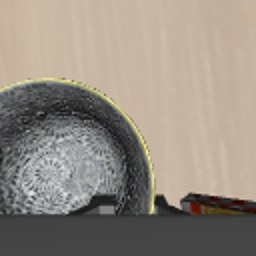
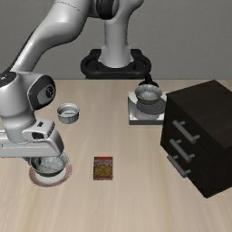

The JEV foundation
\[\mathcal{D}=(s,q,\mathcal{O})\]
Studying JEV reveals a useful control primitive: \(s\) is the observed state, \(q\) is a question, and \(\mathcal{O}=\{o_1,\ldots,o_K\}\) is a finite set of admissible commands.
At each step PlayJev answers seven questions. The bars are the probabilities over the 25 bins of each axis, for the frame on screen. The highlighted bin is the most likely one; the number is the value executed.
Experiment 01 · From games to robotics
PlayJev learned to play games by choosing between a few simple moves. We study what it takes to give that same model control of a robot, where every decision is a precise, multidimensional movement.
01 · The architecture behind the study
JEV is the new model architecture from which this study begins. Instead of producing an unconstrained answer, it evaluates a finite set of admissible choices and returns a calibrated probability distribution over them. The result is a fast, inspectable decision layer that can sit between an observed state and an action.[1]
The JEV foundation
Studying JEV reveals a useful control primitive: \(s\) is the observed state, \(q\) is a question, and \(\mathcal{O}=\{o_1,\ldots,o_K\}\) is a finite set of admissible commands.
Choice readout
The language model runs once. We keep only the logits \(\ell_i\) of the valid answer letters and normalize them over the option set.
Decision
The output is a choice and its full probability distribution. No unconstrained token can become an action.
From architecture to robotics
JEV gives us the decision mechanism. The open question is how to use it when the output is no longer “left”, “right”, or “jump”. At every step, a robot must coordinate position, orientation, and its gripper with continuous precision. Our study asks how far the JEV architecture can be extended across that gap.
02 · A visual child of JEV
JEV defines the parent interface: a state, a question, a finite set of options, and a probability for each valid answer. PlayJev is its visual specialization. It keeps that contract intact, but replaces a textual state with raw pixels and trains the decision model on interaction.[2]
Training procedure. PlayJev learns first from supervised cloning, then from three DAgger rounds that add teacher labels on states reached by the model itself.[3] Across 2.2 million game frames, one shared policy learns ten different games and reaches a mean teacher-normalized score of 0.57.
 raw game frame
raw game frame
Which valid move should the agent take?
Only logits assigned to valid answer letters become the action distribution.
03 · The representation that follows
This is where the alphabet becomes necessary: it translates a continuous robot action into choices PlayJev can make. Each of the seven control dimensions is quantized separately.
The control variable
At each control step \(t\), LIBERO expects six continuous end-effector deltas and one binary gripper command.[4] A single 26-letter question cannot represent this space at useful precision, so we factor the action by dimension.
The first attempt
We first clustered the expert actions into a small codebook. Here, \(K\) is the number of 7D action prototypes in that codebook: each prototype contains all six motion deltas and the gripper command. At every step, the continuous expert action is replaced by its nearest prototype, selected with a single letter.
A larger \(K\) offers more candidate movements, but it still forces the seven control dimensions to vary together. The replay below isolates that representation error: no learned policy is involved.

loading…The original command from the demonstration.

loading…0 / 48 successful oracle replays.

loading…2 / 48 successful oracle replays.
All three rollouts start from the same simulator state and remain synchronized by control step. Their images diverge as each method executes its own command; the vectors below show the expert action and its K16 and K26 reconstructions at that step.
Even the larger codebook fails: choosing one whole-action prototype cannot preserve the independent precision required by each control axis. This motivates the factorized alphabet tested next.
04 · Oracle replay
Before PlayJev can learn an action alphabet, that alphabet must preserve the control signal it is meant to describe. Every codec replaces the expert’s continuous trajectory with symbols, then reconstructs an approximation. If that approximation already misses the grasp or drifts away from the goal, the learning problem is ill-posed: the model is being asked to predict letters that cannot reproduce the correct behavior.
Oracle replay isolates this representation bottleneck. We give each codec the expert actions directly—without vision, language, or policy prediction—and execute only its reconstruction in the simulator. Success is a necessary gate: first prove that the alphabet can carry the movement, then ask PlayJev to learn it.
Three ways to write motion
The methods differ in what they treat as a token. BIN encodes one scalar at one time step. FAST encodes patterns across time. OAT learns a short, ordered latent description of the whole chunk.
Each action dimension is independently assigned to one of \(B\) uniform levels at every time step. Decoding maps the index back to the corresponding scalar. This is the direct action-token approach used by RT-2 and OpenVLA.[5][6]
FAST applies a discrete cosine transform along time, scales and rounds the coefficients, then compresses the resulting integer stream with byte-pair encoding. Smooth trajectories concentrate their information in a few low-frequency coefficients.[7]
OAT uses a transformer autoencoder and finite scalar quantization. Nested dropout trains each prefix of the latent sequence to reconstruct the chunk, ordering tokens from coarse to fine.[8][9][10]
Every replay succeeds. No codec training required.
Seven tokens per step × 32 steps. Precise, predictable, but verbose.
Oracle replay removes perception and policy learning from the experiment. It asks one necessary—but not sufficient—question: if the tokenizer is given the expert’s own actions, can its reconstruction still complete the task?
The decisive clue
OAT can make only a small error at each step. But when those errors share the same sign, they add up. By the end of the trajectory, the robot is no longer where it thinks it is.[8]
Integrated drift predicts failure better than per-step error.
Median maximum deviation in failed OAT replays.
Median maximum deviation in successful replays.
05 · The policy
The proposed multiview policy preserves the temporal agent-view used in our experiments and adds a synchronized temporal wrist-view. PlayJev encodes both streams once, answers seven axis-specific Choice questions in parallel, and reconstructs one continuous robot action.
01 · synchronized input


02 · shared model
03 · one batched forward
7 Choice questions · shared visual state04 · distributions
\(p(b_k\mid S_t,q_j)\)
05 · execute
[dx, dy, dz,
dα, dβ, dγ, g]
7D ACTION
Six motion axes
For each continuous axis \(j\), the policy returns a distribution over 25 fixed levels. We execute its probability-weighted mean, not merely the most likely bin.
Binary gripper
The gripper remains discrete. All seven questions share the same visual state and are evaluated in one batched forward pass.
The counterintuitive experiment
Choose a scheme. The second reconstructs every demonstration perfectly, yet it asks almost twice as many questions and produces a worse policy.
Where it fails

One gripper closure, stable transport, release over the plate. Successful episodes are shorter than their demonstrations.
05b · Horizon in progress
The same bin25 policy can also be asked about the next actions of each state. Training then covers four steps ahead, while the closed loop still executes only the current action: the horizon changes what the model learns, not what an inference step costs.
Same data, same optimizer steps, same forty dev episodes as the one-step policy, which reached 28 of 40.
[Pending: the four-step result and its paired comparison with the one-step policy. Reported whether or not it clears the gate of five more successes.]
06 · The next test
LIBERO · Goal
Tasks with different goals: drawers, stoves, cabinets, bowls, and plates. This directly tests dependence on Spatial’s ten fixed sentences.
Replicate bin25 unchanged, then train with 3–5 validated paraphrases per instruction. Evaluate canonical prompts, seen paraphrases, and held-out language templates separately.
LIBERO · Long
Multi-stage sequences: two objects, drawers to close, stoves to switch on. A purely reactive policy is no longer enough; action chunking provides a relevant temporal baseline.[11]
First run oracle replay for binning, FAST, and OAT. Then compare the unchanged two-frame baseline with a history-conditioned policy and a recovery dataset built from states visited after missed grasps.
LIBERO · Object
The same pick-and-place structure with different objects. A clean control for separating motor control from visual generalization.
Compare Spatial-only, Object-only, and joint training. Sample by task rather than by frame, with robot replay to measure and limit catastrophic forgetting.
The lesson
The best representation is not the one that compresses most. It is the one that preserves control and remains simple enough to predict.
Sources
Primary papers and project sources linked from the relevant claims above.
System One finite-choice request and response contract. OmniJev, project repository.
OmniJev, model, training code, evaluation and weights, 2026.
S. Ross, G. Gordon, J. A. Bagnell, AISTATS 2011.
B. Liu, Y. Zhu, C. Gao et al., 2023.
A. Brohan, N. Brown, J. Carbajal et al., 2023.
M. J. Kim, K. Pertsch, S. Karamcheti et al., 2024.
K. Pertsch, K. Stachowicz, B. Ichter et al., 2025.
C. Liu, X. Han, J. Gao et al., 2026.
F. Mentzer, D. Minnen, E. Agustsson, M. Tschannen, ICLR 2024.
O. Rippel, M. A. Gelbart, R. P. Adams, ICML 2014.
T. Z. Zhao, V. Kumar, S. Levine, C. Finn, RSS 2023. Introduces Action Chunking with Transformers.
X. Zhou, Y. Xu, G. Tie et al., 2025.